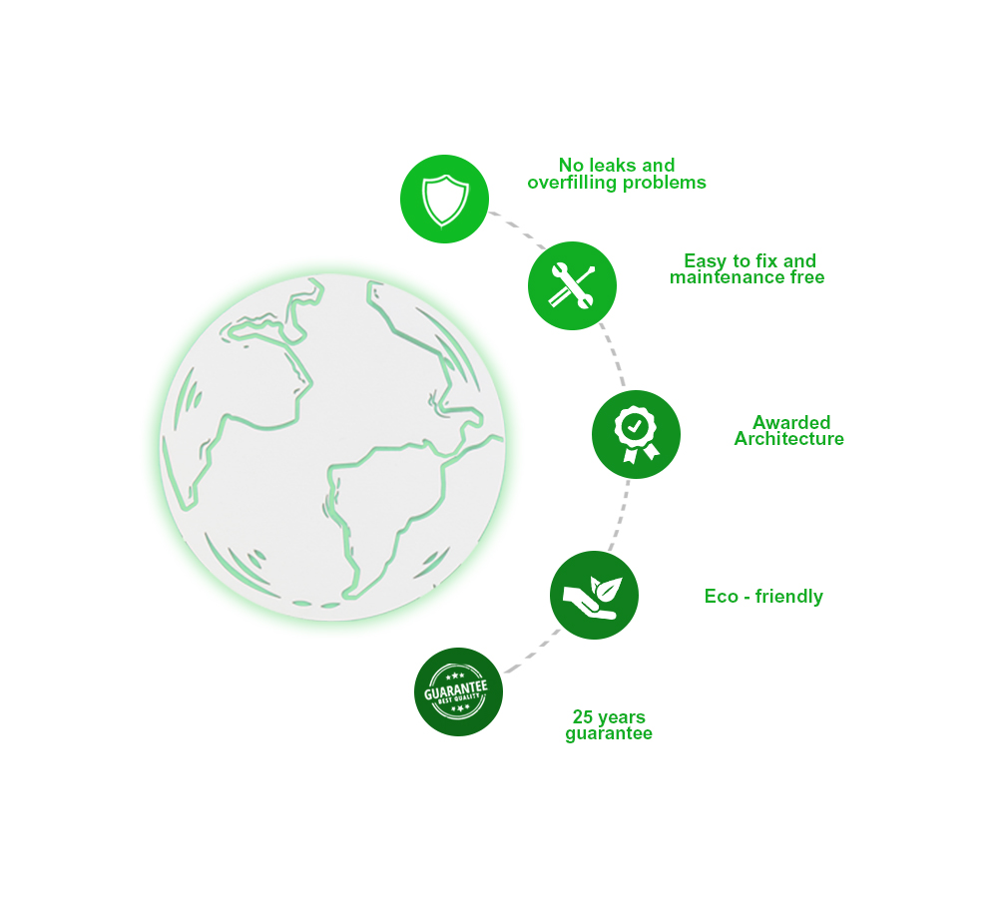
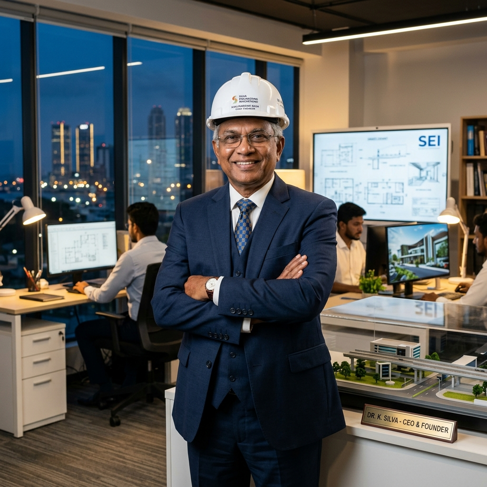

WATER SAFETY
WATER SAFETY
5 Signs Your Septic Tank is Leaking Groundwater in Sri Lanka
Learn how to detect groundwater leaks during monsoon season and how sealed Parawewe bio tanks protect your drinking water.
Invented by Mr. Dharmakeerthi Mannage (Founder & Chairman) and manufactured islandwide exclusively by Buddija Construction (Pvt) Ltd. Parawewa layer-base technology offers two custom solutions: Option A (100% Gravity-Fed) and Option B (Electrical Submersible Pump-Sealed for High Water Table) with zero gully bowser emptying.

Buddija Construction (Pvt) Ltd provides two engineered models tailored for Sri Lanka's diverse soil & water table conditions.
100% Passive Flow • 0% Electricity • 0 Moving Parts
Ideal for standard inland building plots with normal soil elevation and standard ground water levels. Uses natural gravity head pressure to pass effluent through 4 layers of biological filter media.
Sealed Submersible Pump System • Flood-Proof
Engineered specifically for high groundwater table lands, marshy wetlands (Piliyandala, Wattala, Ja-Ela), coastal properties, and flat elevations where gravity discharge is impossible.
Discover why over 25,000 Sri Lankan property owners trust Parawewa by Buddija Construction (Pvt) Ltd over traditional concrete pits and mechanical STPs.
Impermeable composite chamber seals raw sewage, preventing E. coli bacterial seepage into household drinking wells.
Backed by an official 10-Year written manufacturer guarantee issued directly by Buddija Construction (Pvt) Ltd.
Active microbial digestion liquifies solid sludge, permanently eliminating annual gully bowser suction truck fees.
Invented under Sri Lanka Patent #10848, winning 1st Place at the 2018 Presidential Innovation Awards and iCAN Canada.
Available in Option A (Gravity-Fed 0% power) and Option B (Submersible Pump-Sealed for marshy lands) to fit any ground table.
Installed in over 25,000 homes, hotels, and apartments across Colombo, Gampaha, Kalutara, Kandy, Galle, and Jaffna.
Engineered to serve single residential homes up to large commercial complexes across Sri Lanka.
Residential homeowners seeking an odor-free, maintenance-free septic tank with zero annual gully bowser costs.
Properties in Piliyandala, Wattala, Ja-Ela, Negombo, and coastal regions with high ground water levels.
Corporate office headquarters and retail outlets requiring CEA-compliant wastewater treatment.
Hotels in Bentota, Ella, and Sigiriya needing complete odor elimination and garden irrigation water recycling.
Real estate property developers looking for reliable, 10-year warranted eco bio septic solutions for new housing schemes.
Industrial canteens and factory quarters needing high-capacity organic waste treatment.
Top-rated environmental engineering articles. Tap any article to read the full guide.
WATER SAFETY
Learn how to detect groundwater leaks during monsoon season and how sealed Parawewe bio tanks protect your drinking water.
 COST SAVINGS
COST SAVINGS
Compare 24/7 electric blower running costs against 100% passive biological gravity flow over 25 years.
 ENGINEERING GUIDE
ENGINEERING GUIDE
Step-by-step engineering guide for installing leak-proof bio septic systems in coastal and marshy soils like Piliyandala and Negombo.
Watch real site installation walkthroughs, technical feature demonstrations, and house previews on YouTube.
Official Sri Lanka feature showcase explaining how Parawawa layer-base biological filtration decomposes sewage without odor or emptying.
See Parawawa bio septic tanks integrated into high-end luxury housing projects built by leading developers in Negombo.
Compare our patented biological system (Option A & Option B) against imported mechanical STPs and traditional concrete pits.
| Feature / Parameter | Parawewa (Buddija Construction) | Imported Mechanical STP (Aerated) | Traditional Concrete Septic Tank |
|---|---|---|---|
| System Options | Option A (Gravity) or Option B (Pump-Sealed) | Single Fixed Electric Blower Unit | Standard Concrete Ring Pit |
| Electricity Required | Option A: 0% Electricity / Option B: Submersible Pump | Requires 24/7 Electric Blower (High Bills) | 0% Electricity |
| Power Cut Operation | Option A operates 100% during power cuts | Blower Stops; Bacteria Dies & Odor Spills | Operates (Overflow Risk) |
| Manufacturer Warranty | 10-Year Written Guarantee (Buddija Construction) | Limited 1 - 3 Year Warranty | 0 Warranty |
| Gully Bowser Emptying | Never Required (0 Gully Fees) | Periodic Sludge Purging Required | 1-2 Times Per Year (Costly) |
Read verified reviews from home owners, luxury housing developers, and resort managers across Sri Lanka.
"We installed Parawewa 10 years ago when building our 3-story house in Rajagiriya. We have never called a gully bowser once! Even during high rain season, there is zero smell. Best investment for a home."
"As luxury housing developers in Negombo, we recommend Parawewa bio septic tanks by Buddija Construction to all our clients. The 10-year written warranty gives home buyers total peace of mind!"
"Our eco resort in Bentota requires clean water recycling for garden lawns. Parawewa system discharges clear, odorless water daily that waters our lawns automatically. Highly recommended!"
Pioneering sustainable environmental engineering in Sri Lanka since 1996.

Founder of Buddija Construction (Pvt) Ltd
In 1996, Mr. Dharmakeerthi Mannage set out to solve one of Sri Lanka's most persistent sanitation problems: leaky septic tanks, groundwater contamination, and the high recurring cost of gully bowser trucks.
Through years of biological research, he invented the patented Parawewa layer-base bio septic system (Sri Lanka Patent #10848). His invention won 1st Place at the 2018 Presidential Innovation Awards in Sri Lanka and a Silver Medal at iCAN 2019 in Canada.
The Parawewa Bio Septic Tank System is manufactured, supplied, and installed islandwide exclusively by Buddija Construction (Pvt) Ltd.
Real document photographs downloaded directly from parawawa.lk official archives.

Official Presidential innovation certificate awarded by the President of Sri Lanka.

Awarded in Toronto, Canada for international eco-technology excellence.

Original patent registration document for layer-base biological filtration.

Independent laboratory test report confirming irrigation-safe clear water output.
Select your building type and estimated number of users to see your recommended Parawewa model and financial savings.
Find immediate technical answers about Parawewa eco bio septic tank systems by Buddija Construction (Pvt) Ltd.
Unlike imported mechanical STPs which require continuous 24/7 electricity to run air blowers and need frequent mechanical servicing, Parawewa engineered by Buddija Construction (Pvt) Ltd provides two flexible options: Option A (100% Gravity-Fed with 0% electricity for normal ground) and Option B (Submersible Pump-Sealed for high ground water table), both featuring a 10-Year written manufacturer guarantee and zero gully bowser emptying.
Option A (Gravity-Fed) operates on 100% passive natural gravity flow with 0% electricity, ideal for standard ground levels. Option B (Submersible Pump-Sealed) uses a sealed heavy-duty submersible pump designed specifically for high water table lands (such as Piliyandala, Wattala, or Negombo) where natural gravity discharge is restricted.
Buddija Construction (Pvt) Ltd issues an official 10-Year written manufacturer guarantee certificate covering structural tank integrity, chamber sealing, and multi-stage biological layer filtration performance.
Yes! Parawewa Option B is specifically engineered for high groundwater tables, wetlands, and coastal soils (Piliyandala, Wattala, Ja-Ela, Negombo, Galle). The hermetically sealed composite body prevents inward water seepage and flood backflow.
Yes, Parawewa effluent discharge is laboratory-tested to meet all Sri Lanka Central Environmental Authority (CEA) discharge guidelines (BOD & COD limits), making it suitable for commercial buildings, hotels, and apartments.
The Parawewa bio septic system was invented in 1996 by Mr. Dharmakeerthi Mannage, Chairman and Managing Director of Buddija Construction (Pvt) Ltd in Sri Lanka. The technology holds Sri Lanka Patent #10848.
Our expert engineering team at Buddija Construction (Pvt) Ltd led by founder Mr. Dharmakeerthi Mannage is ready to assess your site anywhere in Sri Lanka.